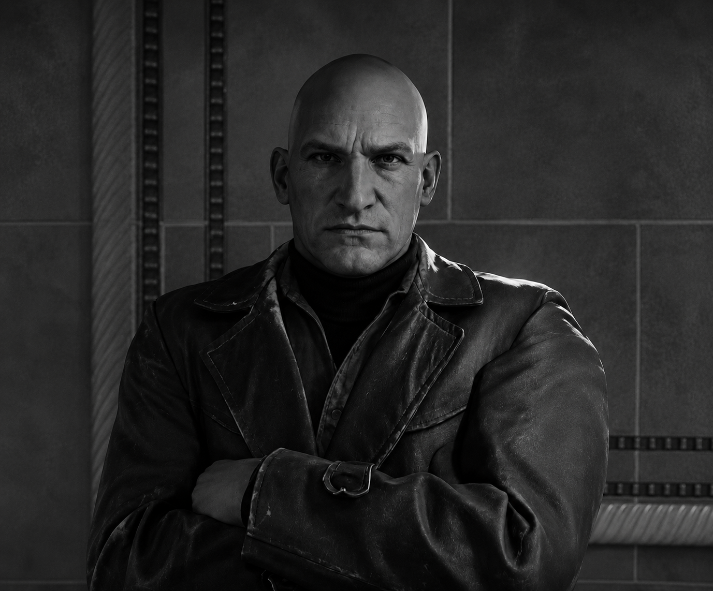
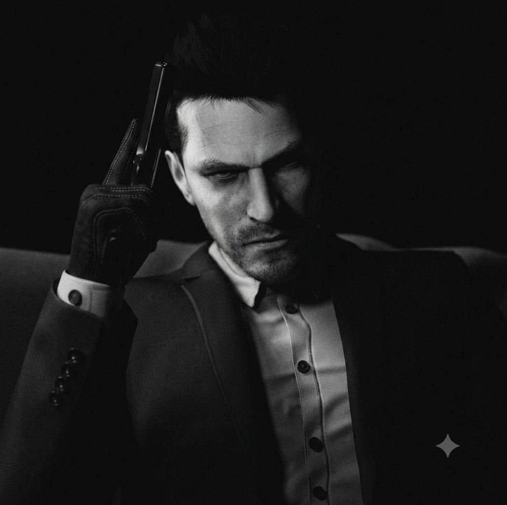
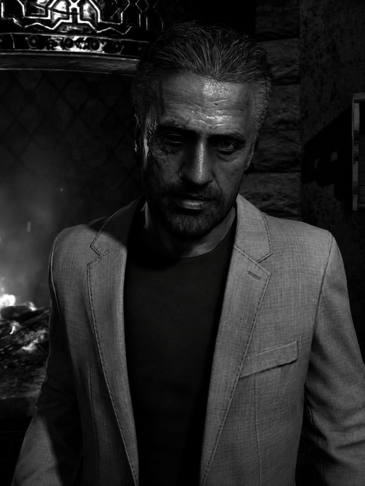
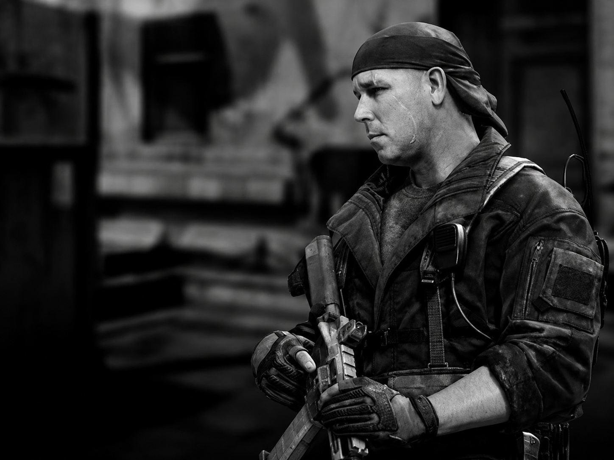
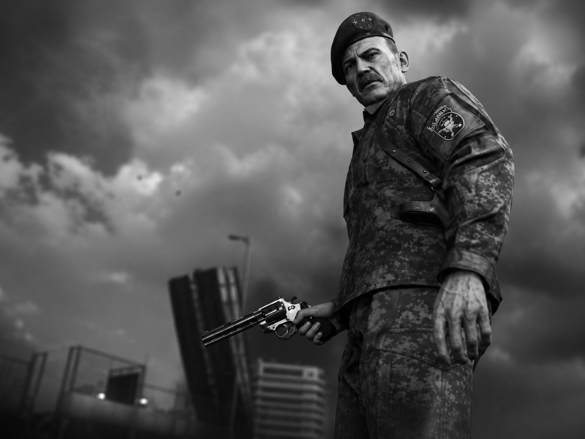
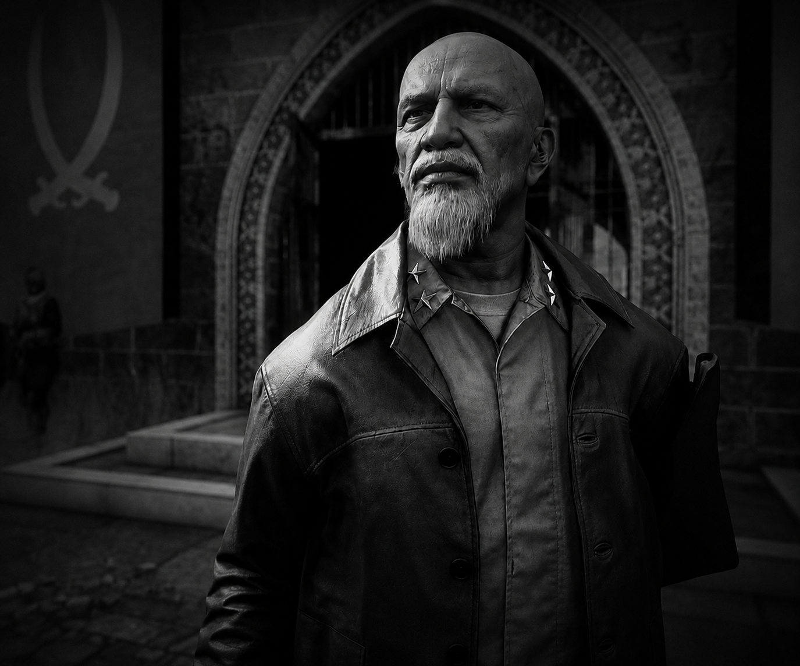

Conheça os inimigos mais temíveis da franquia Call of Duty.

Lev Kravchenko foi um dos principais antagonistas da saga Black Ops. General soviético durante a Guerra Fria, participou de operações secretas e projetos militares extremamente controversos. Conhecido por sua crueldade e falta de escrúpulos, tornou-se um dos maiores inimigos de Alex Mason, Frank Woods e Jason Hudson. Sua influência em diversos eventos marcou profundamente a história da franquia.

Vladimir Makarov é considerado um dos vilões mais perigosos de Call of Duty. Líder de uma organização ultranacionalista russa, foi responsável por ataques terroristas que desencadearam conflitos em escala global. Sua inteligência, ambição e disposição para sacrificar qualquer pessoa em nome de seus objetivos fizeram dele o principal inimigo da Task Force 141 em Modern Warfare.

Raul Menendez é o antagonista central de Black Ops II. Após sofrer perdas que mudaram sua vida para sempre, transformou-se em um líder revolucionário determinado a desafiar as maiores potências do mundo. Carismático e extremamente manipulador, utilizou tecnologia, influência e propaganda para reunir seguidores e executar um plano capaz de alterar o equilíbrio global.

Gabriel Rorke foi um dos soldados mais respeitados dos Ghosts antes de se tornar seu maior inimigo. Após ser capturado pela Federação, sofreu lavagem cerebral e passou a perseguir seus antigos companheiros. Sua experiência em combate, conhecimento das táticas dos Ghosts e desejo de vingança fizeram dele uma ameaça constante durante os acontecimentos de Call of Duty: Ghosts.

O General Shepherd era visto como um herói militar e uma figura de autoridade respeitada. No entanto, por trás dessa imagem existia um homem disposto a ultrapassar qualquer limite para alcançar seus objetivos. Sua traição à Task Force 141 resultou na morte de Ghost e Roach, um dos momentos mais chocantes e marcantes de toda a franquia Modern Warfare. Seus atos tiveram consequências devastadoras para seus antigos aliados e o transformaram em um dos vilões mais odiados de Call of Duty.

Imran Zakhaev foi um poderoso líder ultranacionalista russo e o principal antagonista do primeiro Modern Warfare. Determinado a restaurar a influência da Rússia no cenário mundial, financiou grupos extremistas e organizou diversas operações militares. Sua ideologia radical e sua busca por poder desencadearam eventos que afetaram toda a franquia Modern Warfare.